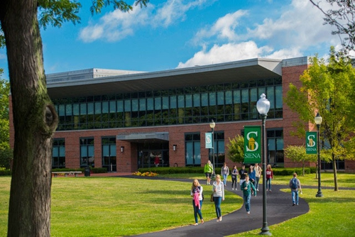

Every year, Siena College brings talented students from high schools
throughout the Albany area to the campus to participate in a competition
that tests their programming skills and problem solving abilities.

Teams of four are
given 6-8 problems and asked to solve them using a coded program.
The High School Programming Contest takes place in March or April and draws
anywhere from 8 to 20 different teams.